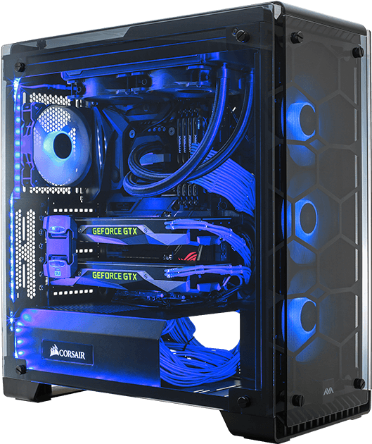
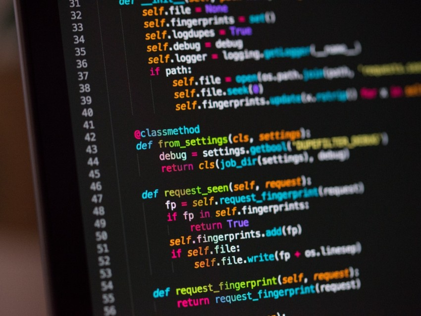

Quiz do B.C.C.
Qual o curso de Bacharelado mais divertido do Senac?

Ciência da Computação
Sistemas de Informação
Arquitetura e Urbanismo
Audiovisual
Quantos semestres tem o B.C.C?
10 Semestres
8 Semestres
6 Semestres
5 Semestres
Quais as funções principais do cientista da computação?

Além de gerenciar máquinas e sistemas, criar aparelhos (hardware), robôs e outras ferramentas que promovem a automatização de processos.
Planejamento de edifícios, considerando a criação e a funcionalidade de espaços internos e externos.
Construir softwares e desenvolver algoritmos, modelos computacionais e teorias computacionais para melhorar e empoderar a sociedade e os negócios.
Fazer pesquisas de mercado, bem como selecionar e indicar as mídias mais indicadas para determinada proposta.
Quem foi o pai da Ciência da Computação?
Bill Gates
Steven Spielberg
Stephen Curry
Alan Turing
Qual a peça mais importante e complexa de um computador?

Placa de Vídeo
Memória RAM
Unidade Central de Processamento (CPU)
Placa-Mãe
Qual foi o primeiro computador eletrônico?

IBM Model 5150
ENIAC
Apple 1
Altair 8800
Como é medida a frequência (Clock) de um Processador?

Em GHz
Em KHz
Em MHz
Em Hertz
Quais foram os criadores principais do Windows, Linux e MacOS, respectivamente?


Jeff Bezos, Paul Allen e Elon Musk
Bill Gates, Linus Torvalds e Steve Jobs
Thomas Edson, Stephen Hawking e Nikola Tesla
Bill Gates, Alan Turing e Steve Jobs
Qual a maior fabricante de computadores pessoais atualmente?

Hewlett-Packard (HP)
Dell
Lenovo
Acer
Como são desenvolvidas as linguagens de programação?

Através de algoritmos em Go e Scala
Através do Prompt de Comando
Através de algoritmos em Rust e C++
Através de Compiladores
Por que estudar no Senac?
Criadores:


Victor Schultz, Giovanna Morelli e Brian Rockumback